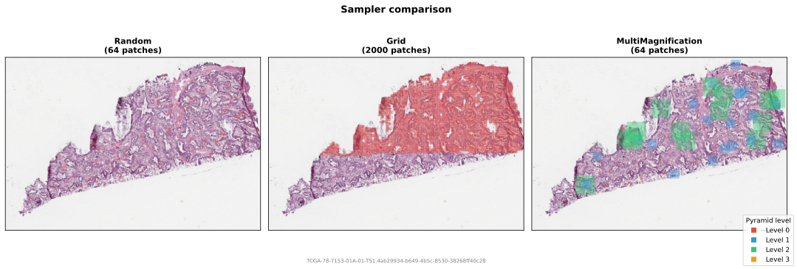
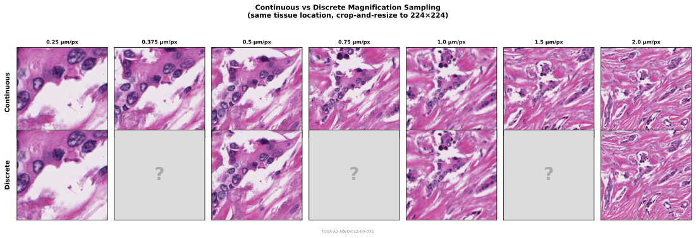

Sampling
Samplers determine where to extract patches. They receive a SlideHandle and a TissueMask, and yield PatchCoordinate objects.
Samplers only propose coordinates based on the tissue mask (a coarse thumbnail-level check). The pipeline may still reject patches after extraction via a PatchFilter (a fine-grained per-tile check).

RandomSampler
Uniform random sampling via rejection: draw random (x, y) from the slide bounds, check against the tissue mask, reject if below the tissue threshold, yield if above. This is the core online patching approach, proposed for FM pre-training by Kaiko (Aben et al., 2024).
from wsistream.sampling import RandomSampler
sampler = RandomSampler(
patch_size=256, # width/height at the target level
num_patches=100, # patches per slide (-1 for infinite streaming)
level=0, # pyramid level (ignored when target_mpp is set)
target_mpp=None, # desired um/px (picks the closest pyramid level per slide)
tissue_threshold=0.4, # minimum tissue fraction to accept a candidate
max_retries=50, # rejection attempts before giving up on one patch
seed=42, # random seed
)
Set num_patches=-1 for infinite streaming during training. The sampler will keep yielding patches indefinitely; use patches_per_slide in the pipeline to control how many are extracted from each slide.
When target_mpp is set, the sampler calls SlideHandle.best_level_for_mpp() to find the pyramid level closest to the desired microns-per-pixel for each slide, ignoring the level parameter. This is useful when slides come from different scanners with different native magnifications.
RandomSampler supports replacement="without_replacement" in the pipeline. See Without-replacement sampling below.
GridSampler
Exhaustive grid over the slide, keeping only patches with sufficient tissue. The grid defaults to non-overlapping (stride=patch_size), but the stride is configurable for overlapping extraction.
from wsistream.sampling import GridSampler
sampler = GridSampler(
patch_size=256,
level=0,
stride=None, # defaults to patch_size (non-overlapping); set lower for overlap
tissue_threshold=0.4,
)
GridSampler is deterministic and exhaustive -- it visits every grid position. This makes it suitable for feature extraction pipelines (e.g., CLAM-style), but not for stochastic online training.
MultiMagnificationSampler
Randomly selects a pyramid level, then samples a random patch at that level. Midnight trains at 0.25, 0.5, 1.0, and 2.0 um/px (Karasikov et al., 2025). Each iteration picks one level at random.
from wsistream.sampling import MultiMagnificationSampler
sampler = MultiMagnificationSampler(
target_mpps=[0.25, 0.5, 1.0, 2.0], # default matches Midnight
mpp_weights=None, # uniform (or provide custom weights)
patch_size=256,
num_patches=-1, # -1 for infinite
tissue_threshold=0.4,
max_consecutive_failures=100, # stop after this many consecutive failures
seed=42,
)
MPP metadata
Multi-magnification sampling requires that the slide file contains microns-per-pixel (MPP) metadata. Most TCGA SVS files include this. If MPP is unavailable, the sampler falls back to single-level (level 0) sampling with a RandomSampler.
MultiMagnificationSampler supports replacement="without_replacement" in the pipeline. See Without-replacement sampling below.
ContinuousMagnificationSampler
Instead of restricting training to a fixed set of scanner magnifications, this sampler synthesises patches at arbitrary magnifications via dynamic crop-and-resize operations. It reads a larger crop from the WSI and resizes it to output_size, producing patches at a continuously varying µm/px. The paper shows this eliminates the performance gaps at intermediate magnifications (up to +4 pp balanced accuracy) that are observed with discrete multi-scale sampling.

from wsistream.sampling import ContinuousMagnificationSampler
sampler = ContinuousMagnificationSampler(
output_size=224, # final patch size (resize is automatic)
mpp_range=(0.25, 2.0), # continuous um/px range
distribution="uniform", # "uniform", "maxavg", or "minmax"
lambda_maxavg=1.0, # entropy regularisation (maxavg only)
num_patches=-1, # -1 for infinite
tissue_threshold=0.4,
max_retries=50,
seed=42,
)
Three distribution modes:
| Mode | Description | Best for |
|---|---|---|
"uniform" |
Uniform over mpp_range | General-purpose, simple baseline |
"maxavg" |
Entropy-regularised softmax over transfer potential; concentrates on central magnifications | Maximising average representation quality |
"minmax" |
LP-optimised to maximise worst-case quality; oversamples boundary magnifications. Requires scipy. |
Robust representations at all magnifications |
Automatic resize
Unlike other samplers, ContinuousMagnificationSampler reads variable-sized crops and the pipeline automatically resizes them to output_size. You do not need to add a ResizeTransform to your transform chain.
MPP metadata
Continuous magnification sampling requires that the slide file contains microns-per-pixel (MPP) metadata. If MPP is unavailable, the sampler falls back to single-level (level 0) sampling with a RandomSampler, using output_size as patch_size.
Without-replacement sampling
By default, the pipeline samples with replacement: the same patch coordinate can be drawn multiple times from the same slide across reopenings. When training with cycle=True on a finite slide set, this means exact duplicate patches can appear before the full slide has been covered.
Setting replacement="without_replacement" on the pipeline changes this behaviour. The pipeline pre-builds a finite pool of non-overlapping grid coordinates for each slide (filtered by the tissue mask), shuffles them, and consumes them one by one. The pool persists across slide reopenings. When the pool is exhausted, it resets (reshuffled) only if cycle=True.
pipeline = PatchPipeline(
...,
sampler=RandomSampler(patch_size=256, target_mpp=0.5),
replacement="without_replacement",
cycle=True,
)
Grid-based coordinate space
This mode replaces the sampler's native stochastic iteration with enumeration over a non-overlapping grid (stride = patch_size). The sampling distribution is different from the continuous uniform distribution of RandomSampler: only grid-aligned positions are considered, and sampler knobs like max_retries and max_consecutive_failures have no effect. The sampler's num_patches is still respected as an upper bound on the number of coordinates yielded (a random subset of the grid is selected when num_patches is smaller than the full grid).
| Sampler | Supported | Notes |
|---|---|---|
RandomSampler |
Yes | Single-level pool at the resolved pyramid level |
MultiMagnificationSampler |
Yes | Per-level pools with weighted level selection |
GridSampler |
No | Already deterministic and exhaustive |
ContinuousMagnificationSampler |
No | Continuous magnification range is not discretisable into a finite pool |
Using replacement="without_replacement" with an unsupported sampler raises a TypeError at pipeline construction time.
Semantics:
- Per-slide: each slide maintains its own independent pool. There is no corpus-wide coordination.
- Filtered patches are consumed: coordinates rejected by
patch_filterare not retried in the same cycle, since the filter is deterministic on the patch content. - Memory: the pool stores one
PatchCoordinateper valid grid cell per slide. For a 100,000 x 100,000 slide at patch_size=256, that is up to ~150k coordinates (~12 MB). With many simultaneously open slides or very small patch sizes, this can add up.
Writing your own
from wsistream.sampling.base import PatchSampler
class MySampler(PatchSampler):
def sample(self, slide, tissue_mask):
# slide: SlideHandle
# tissue_mask: TissueMask
yield ... # PatchCoordinate
To support replacement="without_replacement", override build_coordinate_pool:
from wsistream.sampling.base import CoordinatePool, PatchSampler, enumerate_grid_coordinates
class MySampler(PatchSampler):
def sample(self, slide, tissue_mask):
yield ...
def build_coordinate_pool(self, slide, tissue_mask, rng):
coordinates = enumerate_grid_coordinates(
slide, tissue_mask, level=0, patch_size=256, tissue_threshold=0.4
)
return CoordinatePool(coordinates, rng)
If build_coordinate_pool is not overridden, the pipeline will raise a TypeError when replacement="without_replacement" is used with that sampler.